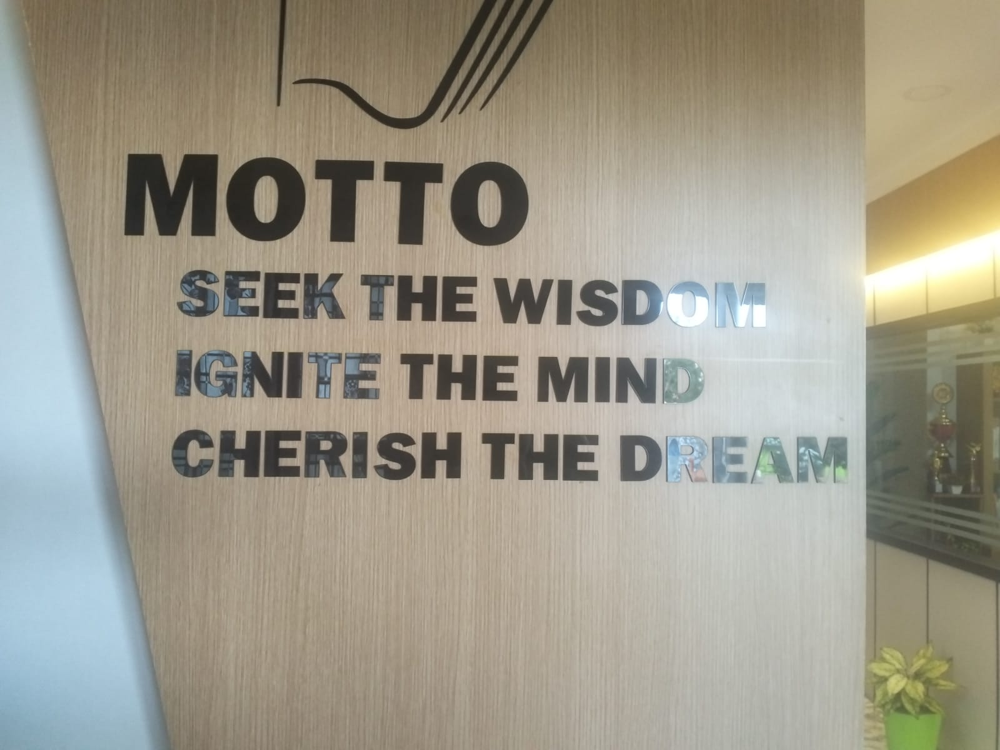

Our Vision
To create a learning environment that encourages students to achieve academic excellence, develop strong character, and grow into confident and responsible individuals.
We are dedicated to shaping young minds through quality education, strong values, and personal care in a safe and disciplined environment.
To create a learning environment that encourages students to achieve academic excellence, develop strong character, and grow into confident and responsible individuals.
Seek the Wisdom. Ignite the Mind. Cherish the Dream.
Every child receives guidance based on academic and personal needs.
Experienced teachers combine care with subject expertise.
Interactive methods help young learners understand concepts better.
Respect, responsibility, and leadership are developed alongside academics.
Cultural events, sports, and competitions build confidence and talent.
Healthy parent-teacher-student relationships support student success.
